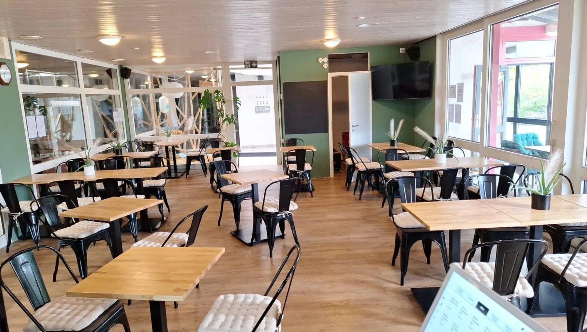
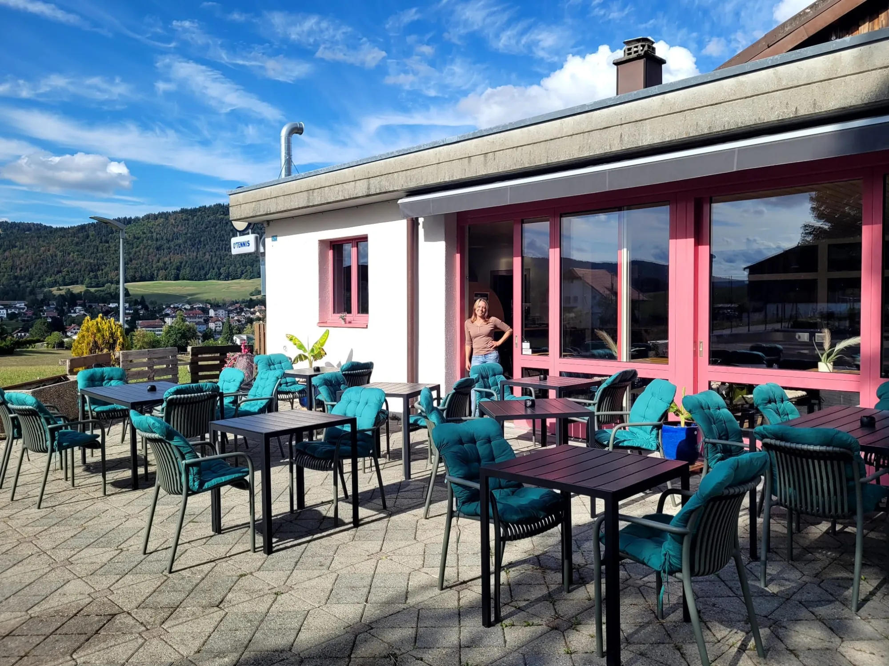
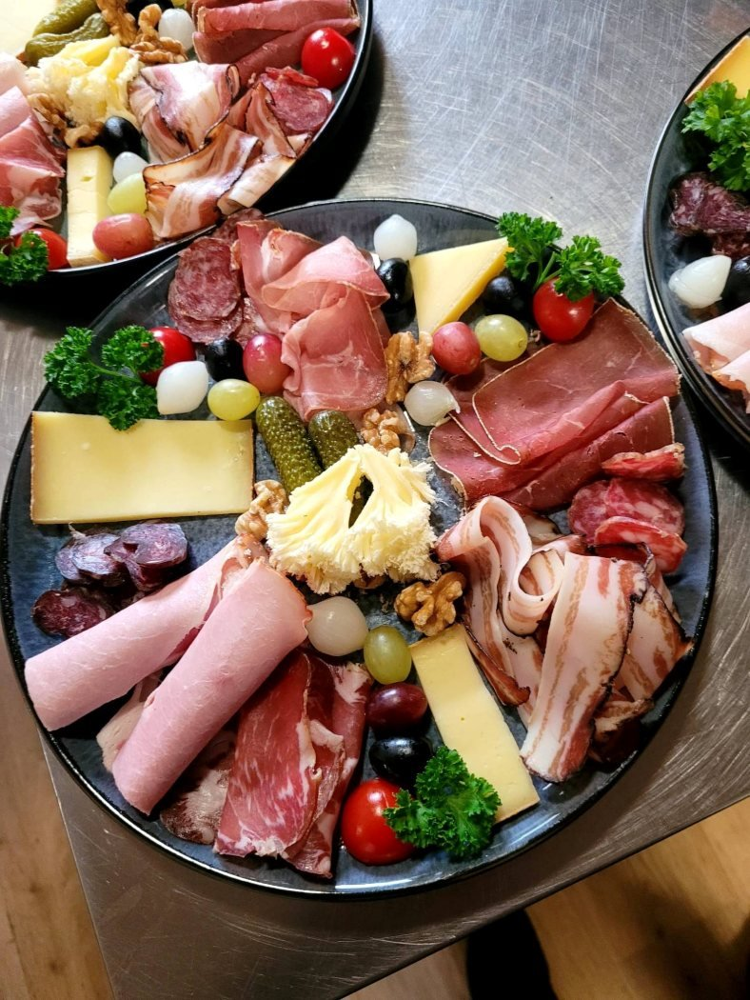
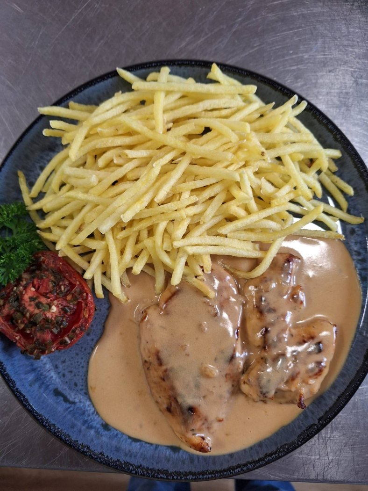
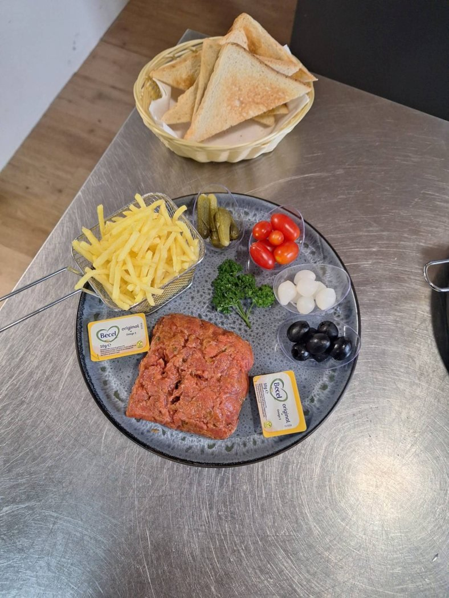

Cuisine maison, viandes grillées et salades fraîches à deux pas des courts, à Reconvilier.
Bienvenue chez nous
Chez O'Tennis, on mise sur une cuisine maison simple et généreuse : viandes grillées, salades fraîches et produits de saison préparés avec soin. Idéalement situé entre les terrains de tennis et de paddle de Reconvilier, notre restaurant-buvette est l'endroit parfait pour se retrouver en famille ou entre amis, avant ou après le match, dans une ambiance conviviale.
Un avant-goût de chez nous
La salle, la terrasse et nos assiettes. Sélectionnez une photo pour l’agrandir.






On vous garde une place ?
Vous venez à plusieurs ? Pensez à réserver par téléphone ou à nous prévenir sur place.
Tartare de bœuf et cordon bleu de poulet sur demande, 24 h à l’avance.
On vous attend
Consultez nos horaires
| Lundi | Fermé |
| Mardi | 10h00 - 22h00 |
| Mercredi | 10h00 - 22h00 |
| Jeudi | 10h00 - 22h00 |
| Vendredi | 10h00 - 22h30 |
| Samedi | 10h00 - 22h30 |
| Dimanche | 10h00 - 22h00 |